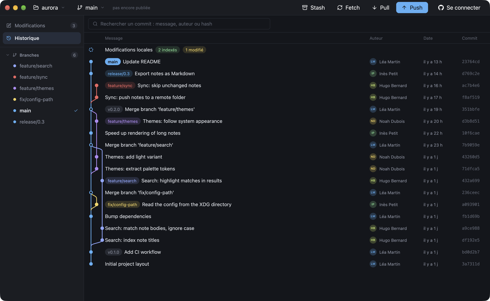

A graph you read at a glance
Each branch keeps its color, origin/x included. Tags, merges and remote branches sit in one view. Search commits by message, author or hash.
Free and open sourceRust, GPUI, GPL-3.0
Browse history, stage single lines and rebase interactively, in an app that opens in 0.18 s and uses about half the memory of GitHub Desktop.
macOS 11+, Windows 10/11, Linux x64 and ARM64. All downloads

until the window appears, against 0.87 s for GitHub Desktop
less memory than GitHub Desktop on the 82,925 commits of git/git
no bundled browser, no helper processes, no runtime to install
installed on macOS, Intel and Apple Silicon in one app (GitHub Desktop: 1.1 GB)
Memory on the same machine, the same repositories and the same window size. Rameau draws its interface on the GPU from a single Rust process; GitHub Desktop runs on Electron.
| Measure | Rameau | GitHub Desktop |
|---|---|---|
| Memory, small repository, idle | 76 MB | 221 MB |
| Memory, small repository, after browsing its history | 100 MB | 213 MB |
| Memory, git/git (82,925 commits), idle | 122 MB | 247 MB |
| Memory, git/git, after browsing 50 commits | 154 MB | 248 MB |
| Time until the window appears | 0.18 s | 0.87 s |
| Processes | 1 | 4 |
| Installed size on macOS | 116 MB | 1.1 GB |
MacBook Pro (Apple M5 Pro, 48 GB), macOS 27.0.1, GitHub Desktop 3.6.11 and Rameau's current development version.
Memory is the physical footprint reported by macOS footprint, the figure Activity Monitor shows,
summed over every process of the app. Each app was quit, relaunched on the repository, resized to 1400×900 and
switched to its history view. Memory was sampled 20 s after launch, then again after pressing the down arrow
50 times in the history. Each value is the median of 5 samples, then the median of 3 launches.
GitHub Desktop also renders the diff of the first file of each selected commit, while Rameau shows the commit details and its file list. GitHub Desktop's installed size includes 652 MB for its own copy of Git; Rameau uses the Git installed on your machine.
Everything you do with Git every day, one click or one key away, without hiding what Git does.
Each branch keeps its color, origin/x included. Tags, merges and remote branches sit in one view. Search commits by message, author or hash.
Reorder, reword, squash or drop commits from a list.
See each branch's pull request and CI result, open a pull request in one click, clone one of your repositories from a list.
Stage whole files, or pick single lines and hunks in the diff. Diffs show word-level changes, unified or side by side.
Amend the last commit, or undo it: its changes come back staged, with its message.
Checkout, merge, rebase, cherry-pick, revert, reset or tag from a right-click. Stash, apply or drop in one click.
Keep one side, the other or both for each conflict block, or for the whole file. A banner follows the merge, rebase or cherry-pick, with Continue and Abort.
Rameau runs the git on your machine, with your config, hooks and credentials. It fetches in the background every 5 minutes. Light and dark themes.
↑ ↓ browse history or changed files, Esc closes the diff, ⌘ ↩ commits, ⌘ 1 / 2 switch views, ⌘ F searches, ⌘ P pushes, ⌘ ⇧ P pulls, ⌘ ⇧ F fetches (Ctrl instead of ⌘ on Linux and Windows). The interface is in French for now.
Every file of the latest release, straight from GitHub. Git must be installed.
Open the .dmg and drag Rameau to Applications. The app is not notarized yet: on first launch,
open System Settings, Privacy & Security, and click Open Anyway. Or run:
xattr -dr com.apple.quarantine /Applications/Rameau.app
Install Git for Windows first. The installer needs no admin rights, adds Rameau to the Start menu and uninstalls from Settings. If SmartScreen blocks it, click More info, then Run anyway.
Make the AppImage executable and run it. It needs a Vulkan driver. Without FUSE, use the .tar.gz.
chmod +x rameau-*.AppImage ./rameau-*.AppImage
Every release includes SHA256SUMS.txt,
and older versions stay on GitHub.
To build from source: cargo run --release, details in the
README.
Free, open source, no account. It opens the repositories you already have.